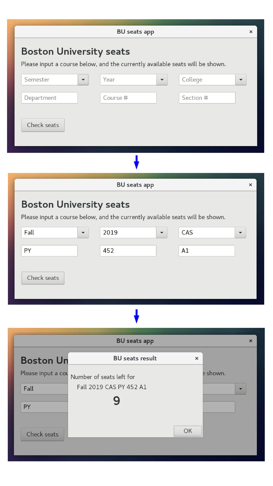
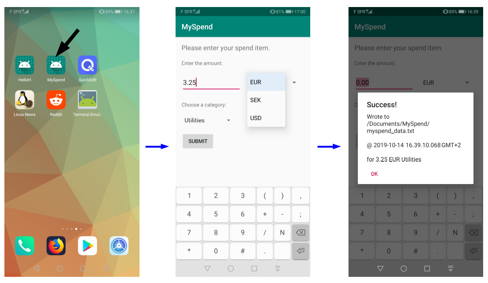
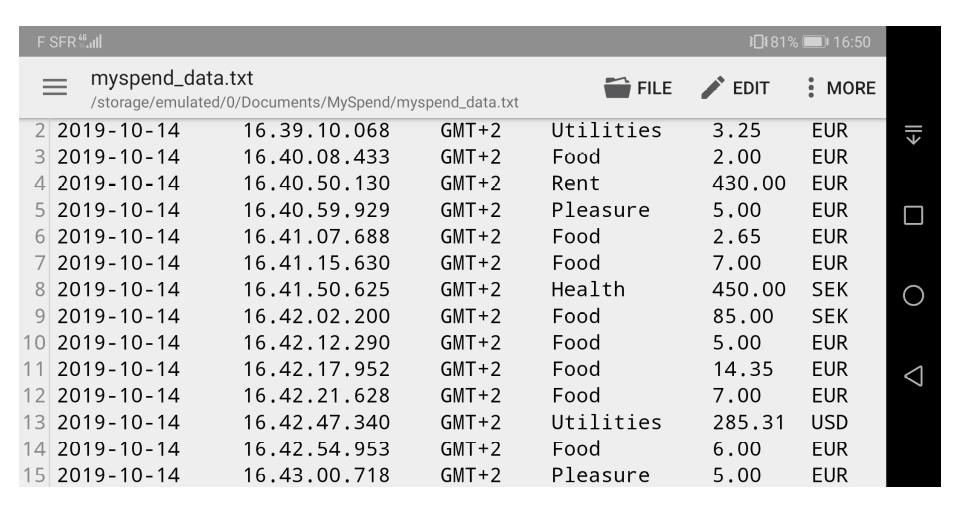
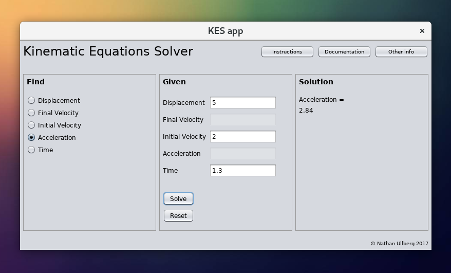

Hi! Below are some software projects that I developed or am involved with.
At Boston University (or any university), it is relevant and important to be able to easily check for how many seats are left for a course that you are interested in. Using a back-end Python script that I wrote, it is possible to scrape and parse the contents of a specified search query, and to locate the appropriate tag containing the number of seats left. This output is then transferred to a user-friendly app. I wrote the front-end in C and XML, using the GTK toolkit, and the Glade UI-designer.
The below images illustrate how the app works:

Many apps exist out there to keep track of your spendings. But it's amazing how much more useful an app can be when it is tailored EXACTLY to the user's personal needs, even if the app is very simple. So with the Android Studio IDE, I programmed a simple app called MySpend, using Java, XML, a UI builder, and the other backend provided by the IDE.
The idea is that every time I purchase something, I create an entry in my app, inputting the amount, currency, and category. When I click "submit", the app makes an entry (with a timestamp) in a TXT file stored on my phone. That way, at the end of the month for example, I can copy this file to my computer, and then parse the data to plot it and have an idea of my spendings.
Here is an example of making an entry:

The spend entries are stored locally on the phone in /storage/emulated/0/Documents/MySpend/myspend_data.txt. Example contents of this file are shown below from having opened the file with a text editor on the phone:

Any beginner's course in physics will involve solving of the kinematic equations as derived from classical mechanics. Basically these equations can be used to figure out quantities like distance traveled or final velocity, based on other initial parameters, and assuming constant acceleration. Such quantities, under such conditions, are useful not only to a beginner but also to almost anyone. So instead of redoing the algebra over and over again every time you have a system you need to solve, this app allows you to just input the parameters and get the output. I used the NetBeans IDE with its UI builder and the Java programming language.
Below I show an image with an example of using the app:

One exquisite feature of the app is that it dynamically monitors the inputs in the "Given" section so that not more than a maximum of three input values are allowed. This prevents a contradiction from occuring.
For a 2D Materials Research Group at the Boston University College of Electrical & Computer Engineering, I helped helped develop a codebase in Matlab that can be used to calculate the charge density of low-doped graphene samples, from spatially-resolved Raman spectral data. I co-authored a paper on this work, which can be found in this arXiv preprint, in which the plots and fitting results were obtained using (mostly) my code. Note however that the original codebase was written by two other PhD students.
For the General Electric Healtcare - Positron Emission Tomography (PET) Cyclotron Systems team, I created a codebase to help improve the RF subsystem optimization procedure. In Python I used a parser library to extract previous data contained in PDF files that are created in the QA testing for each cyclotron, and in Matlab I created a program to predict the optimum phase offset for the system based on phase sweep data.
For the General Electric Healtcare - Positron Emission Tomography (PET) Cyclotron Systems team, I created a suite of scripts in the Visual Basic for Applications (VBA) programming language, to automate tasks associated with developing of the vast collection of training materials which exist in the form of Microsoft PowerPoint presentations.
I am an avid user of the LibreOffice suite, and contribute to the documentation team by improving content related to macro development. Such macros typically exist either in a flavor of the Basic programming language known as OpenOffice Basic, or in Python. My profile can be found here.